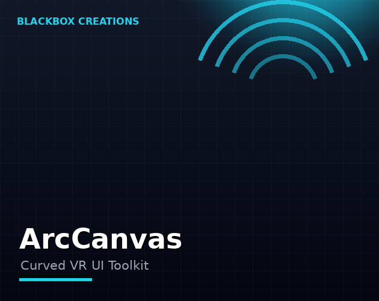

Tools / ArcCanvas
Flat screens feel wrong in VR. ArcCanvas bends Unity UI into curved canvases that wrap around the player — menus, HUDs, panels and dialogs that feel native to virtual reality.
Instant download & priority support
One-time purchase · Instant download · Free minor updates
Buy nowAlso on the Unity Asset Store

In virtual reality, flat floating panels break immersion and strain readability at the edges. Curved interfaces match the natural field of view — text stays legible, menus feel physical, and your game's UI finally belongs in the world instead of pasted over it.
VR developers building for Meta Quest, PC VR or any Unity-supported headset who want professional menus, settings screens, HUDs and in-world panels without writing custom curved-rendering code.
Put a flat panel in front of a VR player and two things go wrong. First, the edges of the panel sit at an oblique angle to the player's view, so text there gets harder to read the wider the panel is. Second, a flat rectangle floating in space reads as exactly what it is: a 2D overlay pasted onto a 3D world. Both problems get worse the more UI your game has — and modern games have a lot of UI.
Curved interfaces fix both at once. Bend the canvas around the player and every part of it faces the viewer at a similar angle, which keeps text legible edge to edge. The UI also starts to feel like a physical object in the world — a console, a dashboard, a holographic menu — instead of a screen capture hovering in front of your face.
ArcCanvas does not ask you to rebuild your UI or learn a new UI framework. You keep building interfaces the normal Unity way — Canvas, panels, buttons, text — and ArcCanvas applies curvature to the canvases you already have. Your layout, your prefabs, your existing screens all carry over; they just come out bent around the player instead of flat. That matters because UI is usually built late, under deadline, by people who do not want to throw away weeks of layout work. The decision to go curved can come at any point in the project, not just at the start.
A curved menu is only half the job — players still need to use it. ArcCanvas is built for VR headsets including Meta Quest, with interaction patterns suited to both controllers and hand tracking. Reaching out and tapping a curved button should feel as natural as the curve looks, and the toolkit is designed around that expectation from the start.
Start with the screens players stare at longest: main menus, settings screens, inventory and character panels. Then consider in-world interfaces — control consoles, shop kiosks, mission boards — where a curved panel reads as a physical object in the scene. HUDs benefit too, particularly wide ones where flat edges would fall out of the comfortable reading zone.
There is a comfort argument too, not just an aesthetic one. VR players hold their heads still and move their eyes; a flat panel forces constant refocusing between the center (close, straight-on) and the edges (farther, oblique). A curved panel keeps the whole surface at a roughly uniform distance and angle, which reduces the micro-strain of reading across it. Over a two-hour play session — an RPG with heavy menus, a sim with dense HUDs — that comfort difference is something players feel without being able to name it. It is one of those quiet quality signals that separates professional VR UI from amateur overlays.
Yes — ArcCanvas is built for VR headsets including Meta Quest, with interaction patterns suited to controllers and hand tracking.
No. ArcCanvas works with standard Unity UI components — you curve the canvases you already have.
Yes. ArcCanvas curves the canvases you already have, so existing prefabs, layouts and screens carry over without rebuilding.
ArcCanvas is built for VR headsets including Meta Quest, and works with PC VR and other Unity-supported headsets.
The opposite — that is the point. A flat wide panel puts its edges at a bad viewing angle; curving keeps the whole surface facing the player, which keeps text legible edge to edge.